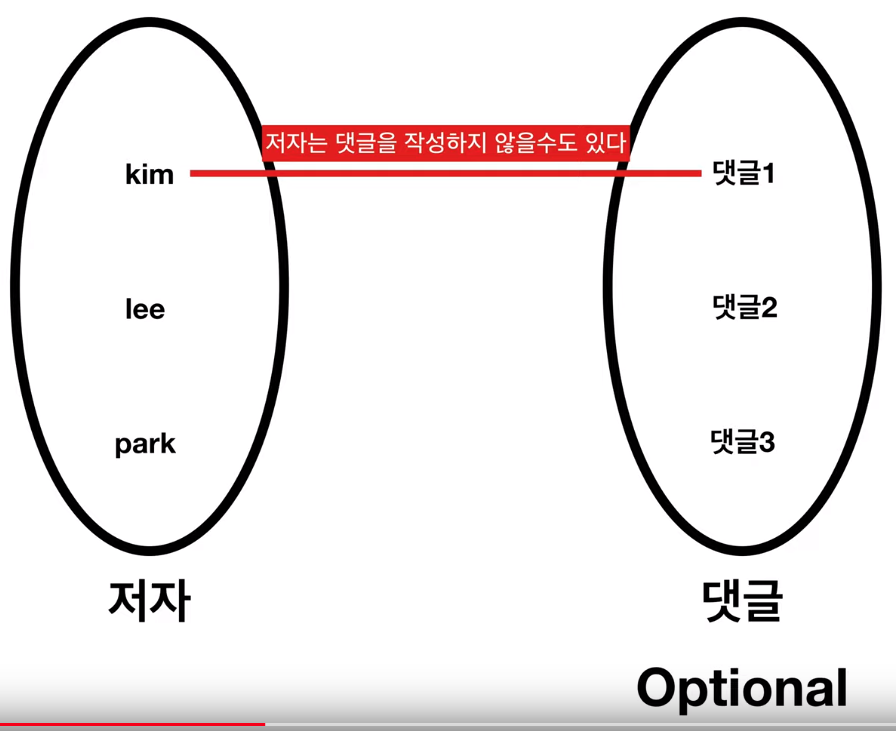
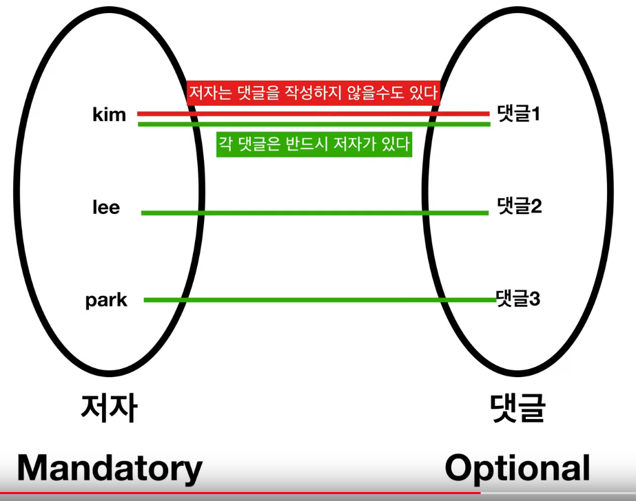
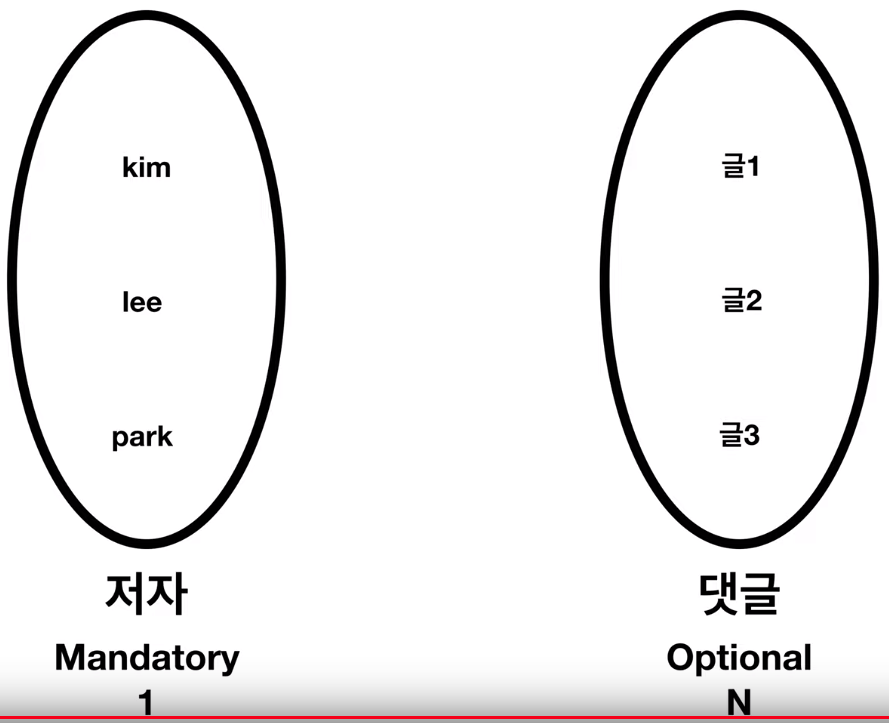

This is personal study note
Copyright and original reference are from:
https://www.youtube.com/watch?v=N9NeNEhwGBY&list=PLuHgQVnccGMDF6rHsY9qMuJMd295Yk4sa
================================================================================
Option: existing is okay, none-existing is also okay
================================================================================

Registered "author" can have "no reply"
Author
id name reply_id
1 kim 1,2,3
2 lee
3 park
Reply
id content author_id
1 hi 1
2 good 1
3 bad 1
To Author, Reply is optional
================================================================================
Optional relationship is represented by (O from Optional)
================================================================================

Each "reply" must have "author"
Author
id name reply_id
1 kim 1,2,3
2 lee
3 park
Reply
id content author_id
1 hi 1
2 good 1
3 bad 1
To Reply, Author is mandatory
================================================================================
Author (1, mandatory) : Reply (N, optional)
================================================================================
Mandatory relationship is represented by (| from Mandatory)
================================================================================
There is cardinality (1:1,1:N,N:M) along with optionality (mandatory:optional)

================================================================================